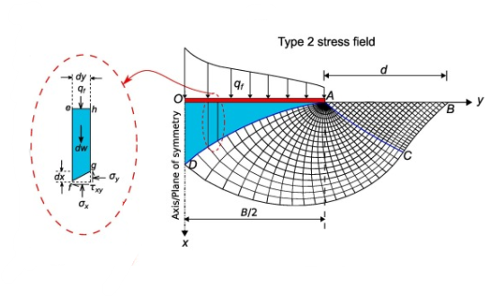
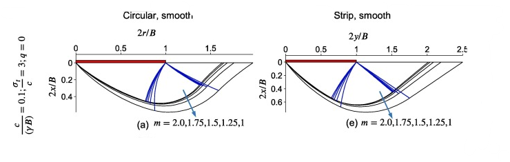
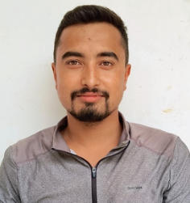

Dr. Ravi Ganesh is an Assistant Professor in the Department of Civil Engineering at IIT Ropar, where he leads the ECO Geotechnics Lab. His research lies at the intersection of computational geomechanics, energy geotechnics, and offshore foundation engineering, with an emphasis on developing advanced analytical and numerical methods for geotechnical engineering.
The ECO Geotechnics Lab is dedicated to advancing the science and engineering of geotechnical systems through theoretical developments, computational modelling, and numerical methods. Our research addresses challenging problems in offshore anchoring systems, foundation engineering, earth pressures, slope stability, and geotechnical infrastructure under static, cyclic, and seismic loading. We develop innovative methodologies based on plasticity theory, finite element limit analysis, slip line method, and other advanced computational techniques to deliver reliable, efficient, and practical solutions for modern geotechnical engineering.





Rupnagar, Punjab 140001, India